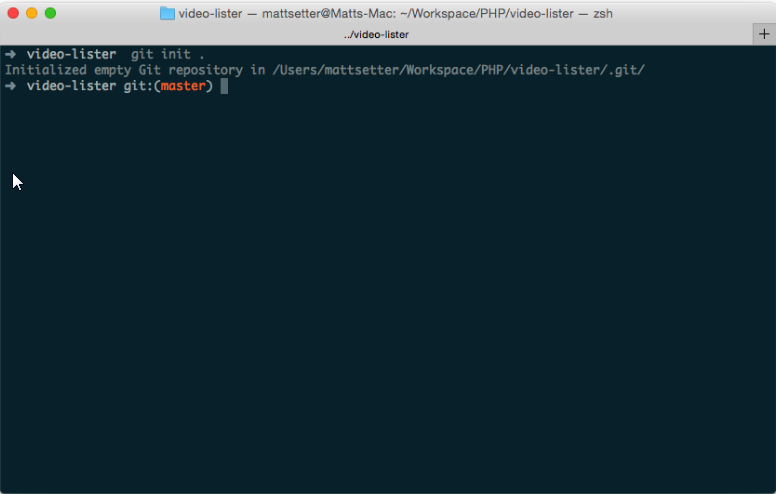
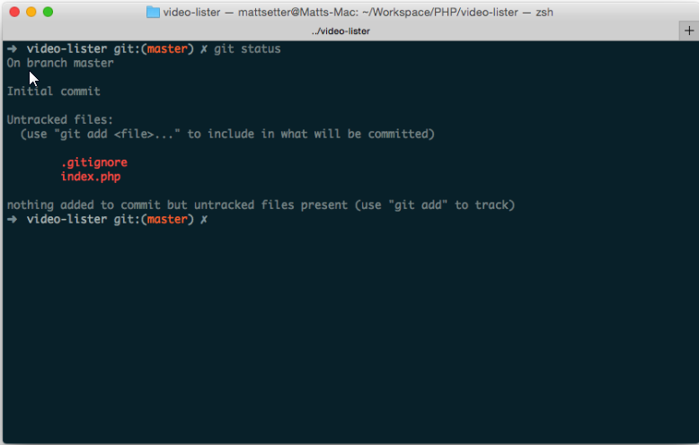
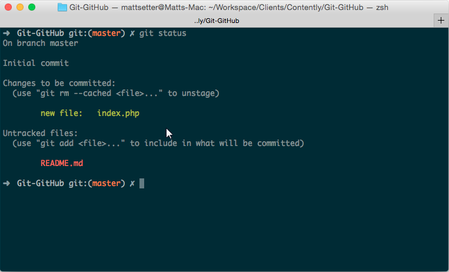

Git e GitHub são duas ferramentas muito interessantes para os desenvolvedores. O Git, apesar de sua complexidade, é a ferramenta de controle de versão favorita da maioria dos profissionais, de web designers a desenvolvedores kernel.
Já o GitHub é a plataforma de hospedagem de código mais utilizada do mundo e onde você encontrará de tudo, de experimentos lúdicos e simples ao próprio kernel do Linux.
Ambas as ferramentas são extremamente sofisticadas, proporcionando uma vasta gama de funcionalidades. E, para extrair o máximo de cada uma, é preciso estar preparado para as complexidades que se apresentarão pelo caminho.
Leia: Por que todo profissional deve aprender programação?
O Git é um sistema de controle de versão de arquivos e, antes de abordar mesmo conceitos básicos de GitHub, é importante entender como funciona esse repositório local.
Antes de qualquer coisa, é preciso que você instale algumas coisas, como a versão mais recente de Git para o seu sistema operacional. Se estiver usando o Linux, você poderá instalá-la usando seu gerenciador de pacotes.
Passo 2É preciso que você esteja minimamente familiarizado com a utilização da linha de comando. Caso ainda não esteja, tudo bem: este artigo trata tudo de forma clara e simples.
Passo 3Crie um repositório simples, composto por um arquivo de código e um README. Certifique-se de ter um diretório reservado para isso.
Com tudo preparado, agora vamos passar para um conjunto padrão de ações que você costuma seguir diariamente – mais especificamente, init, clone, add, commit, diff e log.
O primeiro passo para trabalhar com o Git é inicializar um repositório de projeto para que o próprio Git possa gerenciá-lo. Para isso, execute o comando git init . como demonstrado abaixo.
Um novo diretório oculto chamado .git surgirá no diretório de seu projeto. Nesse local, o Git armazena seus conjuntos de dados e informações de configuração.
Esta é uma maneira alternativa de acessar um repositório: clonando. Semelhante à verificação de um repositório em outros sistemas, executar a função git clone < repository URL > criará uma cópia completa do repositório remoto em seu sistema local. Agora, você pode modificá-lo da maneira que quiser.
Leia: Ele trocou a engenharia de software por data scienceEu sou um desenvolvedor PHP, então utilizarei essa ferramenta para o tutorial. Se preferir utilizar o Python, Go ou alguma outra linguagem, fique à vontade. Crie um novo arquivo, chamado index.php, no diretório de seu projeto e adicione o seguinte código:
Salve o arquivo e execute o comando git status. Isso exibirá o status atual de seu repositório, que, por sua vez, deve ser semelhante à captura de tela abaixo, com index.php listado como um novo arquivo não rastreado.
Agora, vamos focar apenas no index.php e deixar o README.md de lado, por enquanto. Para isso, execute o comando git add index.php. Em seguida, execute git status novamente e você verá index.php listado como um novo arquivo ““Changes to be committed,” e README.md dentre os arquivos não rastreados.
